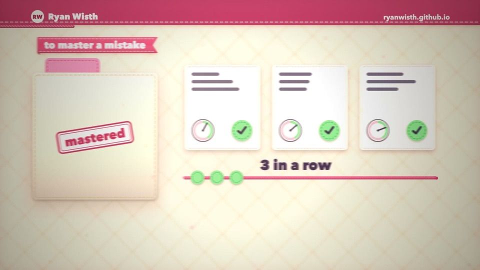
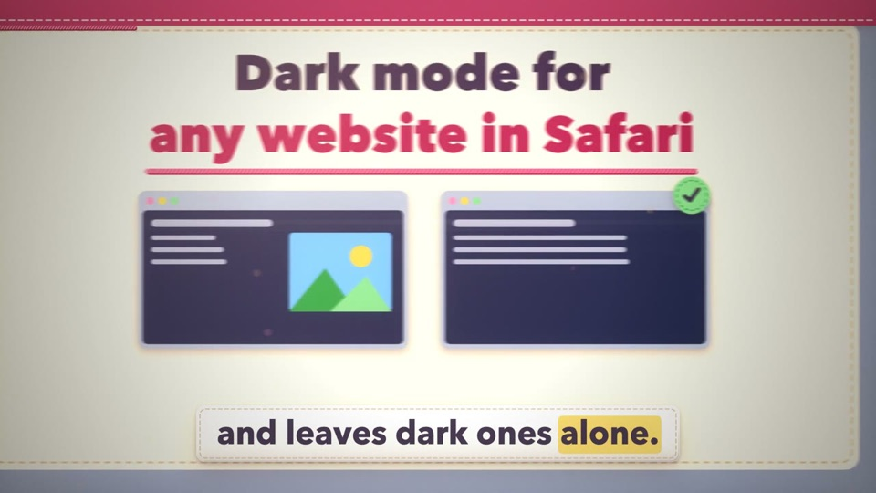
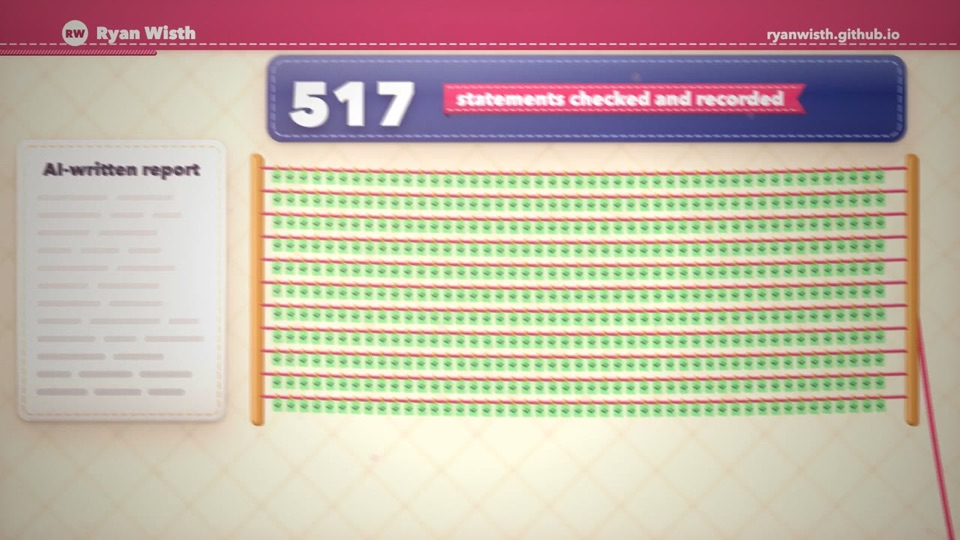
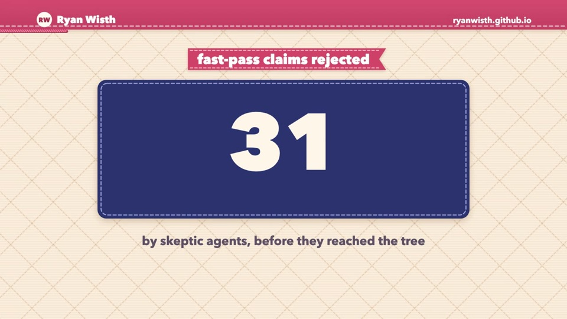
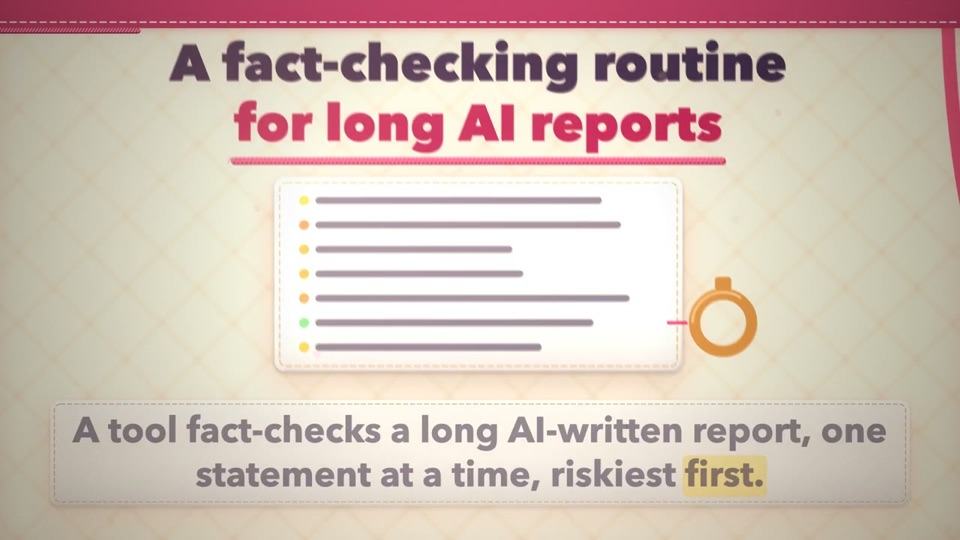
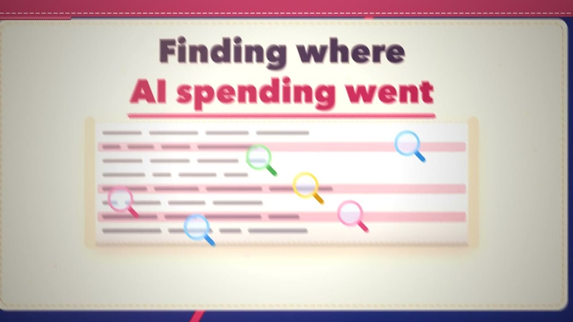
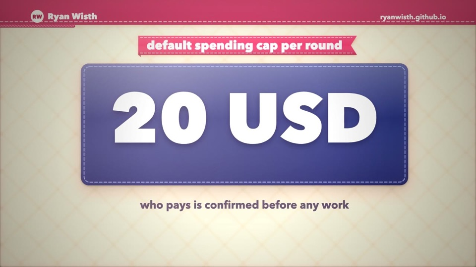
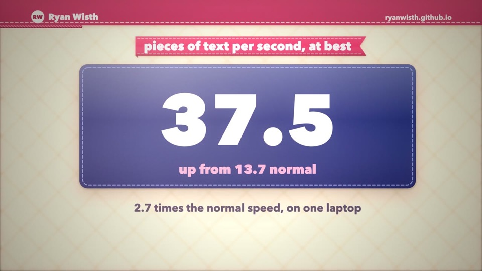
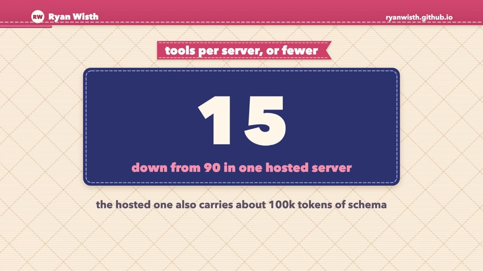

16Ryan Wisth ·, projects built with AI
I build useful tools with AI, and I test every one.
Narrated film, 39 s. Press ♪ for sound.It starts muted.
Read the script
16 projects, each one built with AI, and each one tested. AI feedback, handwritten onto a paper tablet. One tap checks up to 24 pages. A 3D family tree you can turn, with a map of moves, all in one small file. And a private phone app to follow and answer AI chats running on a computer. The desktop features I use most work there. In a fact-checking routine, new problems found fell from 27% to 7% as the checks went on. The code for 13 is public on GitHub. Pick a project below.
Here are 16 of my projects. For each one, I decided what it had to do, AI wrote most of the code, and I tested it before calling it finished. One of them cut each AI helper’s starting cost by about two thirds. Start with these five.
Featured
Start with these five

AI on my own devices
How a color e-ink screen draws, worked out safely
Reverse engineered an undocumented color e-ink display. The reMarkable Paper Pro’s screen is closed: nothing published, and only the maker’s software can draw on it. I decoded all 314 of its drawing files and got my own code rendering on it in color.
My rules Look before changing anything ·; protect the screen by design
- Added
- I tested
- 314 files pass their built-in error checks
- Now
- All 314 of the screen’s drawing files were decoded and pass their error checks. My own code then drew on the color screen in three modes, from 11 steps (about 0.13 s) for fast black-and-white to 86 (about 1 s) for full color.

AI on my own devices
AI feedback, handwritten onto a paper tablet
An AI grader that writes back in handwriting. One tap sends a handwritten page to a vision model. Feedback comes back as pen strokes on the same page: the error crossed out, the fix and next steps written in, color-coded, in the order that teaches fastest. Up to 24 pages at a time.
My rules Never change the original writing ·; runs only when the button is tapped ·; look before changing anything
- Added
- I tested
- Every equation checked by a program before it is written
- Used for real on the tablet, 24 pages at a time
- 314 files pass their built-in error checks
- Now
- Built and used on the tablet in August 2026. Before, feedback meant retyping or a photo. Now I tap Grade, and within seconds the page shows a verdict, the mistake crossed out, and the next steps, in handwriting-style ink, up to 24 pages at a time. Every equation is checked by a program first, and the student’s own writing is changed 0 times. All 314 of the screen’s drawing files were decoded and pass their error checks. My own code then drew on the color screen in three modes, from 11 steps (about 0.13 s) for fast black-and-white to 86 (about 1 s) for full color.

Things I use every day
Claude Code, run from my iPhone
Claude Code sessions, live on iPhone. A phone client for the desktop coding agent. Every session running on the Mac streams live, and you can answer, steer mid-task or start new work from anywhere. The official app can’t see desktop sessions. A reply from the phone starts getting its answer in 6 seconds.
My rules Built by me, on my own network ·; show the chats I already have ·; a reply continues the same chat
- Added
- I tested
- Fake requests turned away, tested again after the last change
- A real reply landed in the same chat
- Now
- Before, work waited until I was back at the desk. Now I reply from the phone and the answer starts in 6 seconds. I use it every day to watch each chat live, tap answers, start new work, and get a notification when Claude finishes or needs me. The desktop features I use most also work on the phone. The app is never on the public internet.

Things I use
A 3D family tree that opens from one file
A 3D family tree explorer. Thousands of people as a 3D graph you can navigate, tied to a map of where each family moved, so lineage is readable at a glance and anyone is findable.
My rules One file ·; still easy to read with hundreds of people ·; safe to share
- Added
- I tested
- Mismatched data is refused
- Two builds came out exactly the same
- Data check: 0 problems
- Now
- One page of about 1 MB shows the whole tree in 3D, plus the map and charts. Unlike online viewers, it needs no internet, no website and 0 add-on code from others. It runs my own private tree. A public copy is built from a made-up family of 420 people: its data check found 0 problems, and two builds came out exactly the same.

Things I use
Game Boy link play, with no cable
Wireless link play for Game Boy handhelds. The link cable, rebuilt over radio at 98% of real-cable speed: trades, four players off one cartridge, sending a whole game to another device. The handhelds also got screens that look like the original hardware, TV output and AirPods sound. Every build is verified on a rig of four real handhelds that compares game state about once a second. The latest passed 28 of 28.
My rules It should feel like plugging in the cable ·; any emulator, at the original speed ·; only handheld-to-handheld radio counts
- Added
- I tested
- Each build by hand on my handhelds
- Caught breaks the automatic tests passed
- Supplied my own games and saves for the rig
- Now
- Linking now feels close to plugging in the cable, which was the goal I set. Game Boy and Game Boy Color games link at close to a real cable’s speed, four players can share one cartridge, players on different emulators can trade, and a whole game can be sent to another handheld. On the newest build, 28 of 28 linked-play checks passed on my four handhelds, linked straight to each other by radio. Still open: players other than the host feel more button delay than the host.
12 more projects
Things I use

A study app built around mistakesQuestions are grouped by the root mistake they test A study app where one wrong answer resets your streak80% can mean knowing it or guessing well
A study app where one wrong answer resets your streak80% can mean knowing it or guessing well
Dark mode for any website in SafariA Safari extension that turns any light site dark in six themes, with colors tuned to within a hair of their targets and settings for each site
Checking AI’s work

Making AI work easy to checkThe AI proposes, plain code enforces the rules, and a second AI whose only job is to find mistakes tries to prove the first one wrong
A family tree built only from real recordsA fact is accepted only if it quotes an original record
A fact-checking routine that stopped slippingIt splits a long report into single claims and checks them riskiest first A study set up so it could prove me wrongCan you predict how good a pinball table is before anyone plays it? Nine predictions were locked in before any results, then tested on 79 real tables
A study set up so it could prove me wrongCan you predict how good a pinball table is before anyone plays it? Nine predictions were locked in before any results, then tested on 79 real tables
Keeping AI costs down

Finding where my AI spending wentThe usage meter shows a total, not a cause Spending rules an AI can’t skipRules written as instructions get agreed to, then broken an hour later
Spending rules an AI can’t skipRules written as instructions get agreed to, then broken an hour later
Long AI jobs that check the bill firstIt takes a job written as instructions and runs it in fresh rounds until a done file appears
AI on my own devices

A private AI assistant on my laptopA 27B model, about two dozen tools, web search, voice and document reading all share one MacBook’s memory
Giving the AI on my laptop tools to usePublic MCP toolkits are built for large cloud models and fill a small model’s working memory before the chat starts
How I build each one
I decide
the goalthe planthe tests it must pass
AI writes
most of the code
I test it
before I call it done